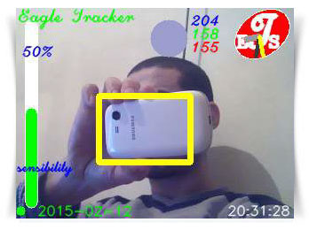

python & opencv تنزيل و تثبيت 
فــتح الكاميرا
تتبع اللون الأخضر
تتبع اي لـــون
تحديد الجه و العينين
تحديد وتتبع الأشياء
كاشف النعاس
نظام انذار ثلاثي الكاميرا
نظام انذار احادي الكاميرا
نظام انذار متعدد الخصائص
ان لغة البرمجة بايثون هي الأنسب لدخول عالم البرمجةبالنسبة لأي مبتدئ لذا انصح بها
عند التنزيل والتثبيت انصح ايضا بتثبيت اكبر قدر ممكن من البرامج الفرعية لهذه اللغة
وذلك حسب الحاجة واهم البرامج هي
حمل البرنامج من هنا python-2.7.2*
حمل البرنامج من هنا numpy-MKL-1.9.0.win32-py2.7*
scipy-0.9.0rc1-win32-superpack-python2.7*
imread-0.2.5.win32-py2.7*
PIL-1.1.7.win32-py2.7*
pyaudio-0.2.4.py27*
pygame-1.9.2pre.win32-py2.7*
pymedia-1.3.7.3.win32-py2.7*
pyserial-2.6.win32-py2.7*
pywin32-218.win32-py2.7*
VPython-Win-32-Py2.7-6.10 :Dللبرمجة 3*
winsdk_web :للتعرف على الصوت*
لتخميل بقية البرامج من هنا
اما بالنسبة للروءية الحاسوبية ومعالجة الصور من الأحسن الإستعانة ب
حمل البرنامج من هنا OpenCV-2.4.1*
لجعل البرامج سهلة وصغيرة
والذي انصح به يجب القيام ببعض التعديل OPENCV 2.4.1 من اجل تثبيت
C قم بفك الضغط بعد التنيل واحفظ الملف في القرص الصلب*
C:\opencv\build\python\x86\2.7\ من “cv2.pyd “ انسخ الملف*
C:\Python27\Lib\site-packages\ قم بلصق هذا الملف في*
بعد ذلك افتح نافذة البرنامج واكتب
import cv2
اذ كانت عمليتك صحيحة فلن يحدث شيئ اما اذا كان هناك خطأ فسوف تحصل على
مع الشرح no module named cv2
بالنسبة للنسخة القديمة والتي قدتحتاج لها (من الأحسن تثبيت النسختين) فيلزم ما يلي
بعد الذهاب الى خصائص النظام
PATH الى المتغير “C:/Python2.7;C:/OpenCV2.2/bin” اظف*
ضع له القيمة PYTHONPATH انجز متغير جديد سمه*
“C:/OpenCV2.2/Python2.7/Lib/site-packages”
بعد ذلك افتح نافذة البرنامج واكتب
import cv
اذ كانت عمليتك صحيحة فلن يحدث شيئ اما اذا كان هناك خطأ فسوف تحصل على
مع الشرح no module named cv
فلنقم الأن بتجربة برنامج يقوم بفتح نافذة الكامرا للحاسوب
openCV و Python 2.7 بعد تنزيل و تثبيت



:قبل البداية
DATA DATA حمل مجلد
SOUND1 SOUND1 حمل مجلد
(SECURITY) في مجلد سمه DATA & SOUND1 : ضع كل من المجلدات
كاشف النعاس
هذا البرنامج محاولة بسيطة لكشف نعاس السائقين اثناء القيادة لتحسين السلامة
اضغظ على صورة الطفل لبدء مسح جديد حيث يوجهك البرنامج للاقتراب او الآبتعاد عن الشاشة
لأخذ ثلاث صور للسائق صورة قريبة واخرى متوسطة واخرى بعيدة
للبرنامج ثلاث مؤشرات
الأول = 1 عند تحديد وجه السائق
الثاني = 1 عند تحديد ان العين اليمنى مفتوحة
الثالث = 1 عند تحديد ان العين اليسرى مفتوحة
(PYTHON) الى برنامج DATA & SOUND1 : اضف كل من المجلدات
حمل البرنامج من هنا
خصائص البرنامج
يمكن استعمال ثلاث كاميرات في نفس الوقت
تحديد الحركة
هذا البرنامج يسمح بتحديد الفرق بين صورتين الأولى كمرجع والثانية صورة حية مصدرها الكاميرا
تتغير شدة الحساسية
انذار عند اكتشاف وجه
انذار عند اكتشاف لون او شيئ
تحديد مكان معين يمكن تنشيط نظام الأنذار فيه
كما يمكننا التحكم في معدل التصويراي الزمن بين الصور ومدة الفيديو
انشيئ 6 مجلدات
ALARMPHOTO, ALARMPHOTO2, ALARMPHOTO3, ALARMVIDEO, ALARMVIDEO2,ALARMVIDEO3
ضعها في نفس مجلد البرنامج
(PYTHON) الى برنامج DATA & SOUND1 : اضف كل من المجلدات
حمل البرنامج من هنا

خصائص البرنامج
تحديد الحركة
هذا البرنامج يسمح بتحديد الفرق بين صورتين الأولى كمرجع والثانية صورة حية مصدرها الكاميرا
تتغير شدة الحساسية
انذار عند اكتشاف وجه
انذار عند اكتشاف لون او شيئ
تحديد مكان معين يمكن تنشيط نظام الأنذار فيه
كما يمكننا التحكم في معدل التصويراي الزمن بين الصور ومدة الفيديو
ضعهما في نفس مجلد البرنامج ALARMPHOTO, ALARMVIDEO, انشيئ مجلدين
(PYTHON) الى برنامج DATA & SOUND1 : اضف كل من المجلدات
حمل البرنامج من هنا
هذا البرنامج عبارة على نظام انذار يشتغل بكلمة مرور ديناميكية مع الخصائص التالية
كلمة المرور تتغير باستمرار مثلا في هذا البرنامج *
كلمة المرور = عدد الساعات + عدد الدقائق + عدد الثواني
فهي تتغير مع تغير الوقت
تحديد الحركة *
تحديد التغير في المشهد *
تغيير درجة حساسية الحركة *
تغيير عدد الصور المراد تسجيلها *
تغيير زمن الفيديو *
WARNINGSYSTEM.py